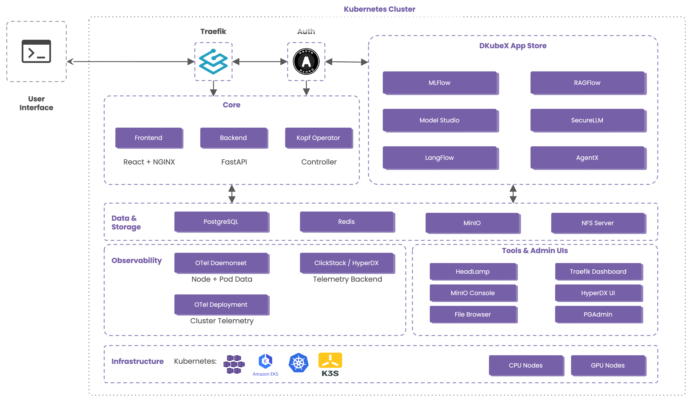

Platform Specifications#
Consolidated specification sheet for the DKubeX 2.0 platform; the six live applications are summarized at the end, each with its own dedicated page.
At a glance#
Category |
Self-hosted MLOps / LLMOps platform |
Foundation |
Kubernetes (k3s-compatible), single-cluster |
Deployment |
On-premises or cloud; firewall-aware, private-registry-based |
Control plane |
FastAPI backend · React 19 UI · Kopf operator |
App model |
Custom |
Ingress & auth |
Traefik + ForwardAuth SSO, per-app RBAC, seat-based licensing |
Data layer |
PostgreSQL 16 · MinIO (S3-compatible) · Redis · NFS shared storage |
Model serving |
KubeAI (LLMs/embeddings) · KServe (classic ML) · MLflow registry |
AI gateway |
SecureLLM — governed, audited, OpenAI-compatible model access |
GPU |
NVIDIA GPU Operator, per-model resource profiles, scale-to-zero |
Observability |
ClickStack + OpenTelemetry (GPU / vLLM dashboards) |
Interfaces |
React web UI · REST API ( |
Live applications |
Workspace · ModelStudio · MLflow · SecureLLM · RAGFlow · Langflow |
Core license |
MIT (platform core) |
What DKubeX is#
DKubeX layers a self-service application platform over a standard Kubernetes cluster. Rather than stitching together separate tools for training, serving, RAG, and developer environments, it provides a single control plane that:
Runs the full model lifecycle — train in a workspace, register versions in MLflow, deploy classic ML through KServe and LLMs/embeddings through KubeAI, then govern every model through SecureLLM.
Treats applications as declarative Kubernetes resources — each install is a custom
Applicationresource that an operator reconciles to a running Helm release, with a live status phase and access URL.Enforces one identity and governance layer — a single authenticated control plane provides SSO across every app, per-application RBAC, seat-based licensing, and per-user namespace isolation.
Keeps models and data on your infrastructure — models are served cluster-local and fronted by an auditable gateway; the platform is firewall-aware and pulls images from a configurable private registry.
Note: Apps install into a dedicated
dkubex-appsnamespace; each user also receives an isolated namespace and a per-user persistent volume (user-storagePVC).
Platform architecture#
DKubeX layers a self-service application platform over a standard Kubernetes cluster. The components below make up that stack, grouped by subsystem.
{kind=link}

DKubeX 2.0 platform architecture at a glance.#
Control plane#
Component |
Technology |
Role |
|---|---|---|
Backend |
Python FastAPI |
REST API for the platform (Swagger and ReDoc) |
Frontend |
React 19 + Vite, served via Nginx |
Admin and user dashboard |
Operator |
Kopf (Python Kubernetes operator) |
Reconciles the |
Application CRD & operator#
Installs are declarative Kubernetes resources — the Application custom resource (applications.application.dkubex.io/v1alpha1) that the Kopf operator reconciles to a running Helm release. You can inspect and script them with kubectl get applications alongside the web UI, and each carries a live status phase (Installing → Starting → Deployed → Ready / Failed) with progress and access URL.
Data & storage layer#
Component |
Technology |
Role |
|---|---|---|
Primary database |
PostgreSQL 16 (Bitnami chart 16.7.21) |
Relational store for the control plane |
Object storage |
MinIO (chart 5.4.0) |
S3-compatible object storage |
Cache |
Redis |
Caching layer |
Shared storage |
NFS server + |
Shared and per-user persistent volumes, including NFS-backed model caching |
Ingress & authentication#
Component |
Technology |
Role |
|---|---|---|
Ingress |
Traefik (chart 40.1.0) |
Single cluster ingress |
Authentication |
ForwardAuth → backend |
Validates the session, checks per-app assignment, and injects identity headers downstream — delivering SSO across every application |
Policy & TLS#
Component |
Technology |
Role |
|---|---|---|
Cluster policy |
Kyverno (3.3.7) |
Enforces policy and synchronizes the registry pull-secret into each application namespace |
TLS |
Supplied certificate |
You provide the TLS certificate; configured at the ingress |
Model & compute infrastructure#
Component |
Technology |
Role |
|---|---|---|
GPU management |
NVIDIA GPU Operator (v25.3.0) |
GPU drivers, container toolkit, and device plugins |
LLM/embedding serving |
KubeAI (kubeai.org CRDs) |
Serving operator with Ollama, vLLM, and Infinity engines; scale-to-zero and per-model resource profiles |
Classic ML serving |
KServe (v0.16.0) + MLflow (client 2.22.4) |
Serves classic ML models pulled from the MLflow Model Registry |
Observability#
Component |
Technology |
Role |
|---|---|---|
Telemetry |
ClickStack (1.1.2) + OpenTelemetry collectors (node daemonset + cluster deployment) |
Ships telemetry including GPU and vLLM monitoring dashboards |
Operational tooling |
Headlamp, PGAdmin (1.50.0), File Browser, Prefect, oauth2-proxy (8.5.1) |
Kubernetes dashboard, DB admin, file management, workflow orchestration, and OAuth2 proxying |
Deployment & infrastructure#
DKubeX installs onto a single Kubernetes cluster, on-premises or in the cloud.
Aspect |
Detail |
|---|---|
Install method |
Helmfile-orchestrated meta-installer — |
Chart versions |
Centralized in |
Kubernetes |
Single running cluster with Traefik ingress; k3s-compatible defaults |
TLS |
Supplied certificate (you provide it) |
Registry |
Configurable private registry ( |
Networking |
Firewall-aware — images come from your registry, and the design avoids reliance on external CDNs |
GPU |
NVIDIA GPU Operator; per-model GPU resource profiles; scale-to-zero ( |
Reference GPU node |
≥ 1 worker with an NVIDIA A10 (e.g. AWS |
Note: DKubeX is firewall-aware and registry-based, which suits restricted-network installs. A guaranteed, step-by-step air-gapped install path is not documented here — plan for connectivity to your private registry.
Model lifecycle#
DKubeX covers the full path from training to governed inference:
Train — in a Workspace terminal, with an MLflow tracking token auto-mounted.
Track & register — log runs and register model versions into the MLflow Model Registry.
Deploy — classic ML models via KServe; LLMs and embeddings via KubeAI (Ollama / vLLM / Infinity engines) onto CPU/GPU resource profiles, with scale-to-zero and NFS-backed model caching.
Govern — front every deployed model with SecureLLM for keys, guardrails, and metering.
Consume — inference from the ModelStudio Playground, RAGFlow, Langflow, or Workspace agents.
Security & governance#
Authentication — local password (JWT, Argon2/Bcrypt) plus OAuth2 (GitHub, generic OIDC) and OAuth2 Proxy.
Single sign-on — the backend
/auth/cookieendpoint is a Traefik ForwardAuth target; it validates the DKubeX session, checks per-app assignment, and injects identity headers (X-Auth-Request-User,-Email,-Role,-User-Namespace) into downstream requests, so every app trusts one identity.RBAC & multi-tenancy — per-application roles (
admin/user, in anapp_rolestable); each user gets an isolated namespace and a per-useruser-storagePVC; apps deploy into a dedicateddkubex-appsnamespace.Model governance — SecureLLM is the mandatory, auditable choke point for all model traffic; API keys are required, and every request is recorded and billable.
Licensing — a built-in License Manager enforces seat-based entitlements per application, with license upload/expiry and access-request workflows.
Interfaces#
DKubeX exposes several surfaces over the same control plane:
Web UI — the React dashboard: application catalog, My Apps, cluster and usage dashboards, and user/role/license management.
REST API — under
/api/v1, with interactive Swagger (/docs) and ReDoc (/redoc); an OpenAPI-generated client is the supported programmatic surface.Kubernetes-native — the
ApplicationCRD is a first-class interface; inspect installs withkubectl get applications.In-Workspace — Terminal, JupyterLab, VS Code, FileBrowser, coding agents, the MLflow UI, and SecureLLM API keys.
Note: There is no separate published end-user CLI or language SDK — the OpenAPI-generated client and SecureLLM’s OpenAI-compatible keys are the programmatic entry points.
Core platform capabilities#
Application catalog — discover, install, upgrade, and uninstall applications with one-click deployment; Helm is fully abstracted behind the catalog and CRD.
My Apps & lifecycle control — per-user view of installed apps with live status, version, access URL, and reinstall / upgrade / cancel actions.
User & access management — registration, local + OAuth2 login, per-application role assignment, and access-request workflows.
Seat-based licensing — the License Manager gates entitlements per application, with upload, expiry, and seat tracking.
Cluster dashboards — real-time stats for users, deployments, CPU/memory, GPU, and component status.
Component configuration — enable or disable platform features (MinIO, NFS, Prefect, ClickStack, and more) from the UI.
Built-in operational tooling — Headlamp, PGAdmin, MinIO Console, File Browser, Traefik dashboard, and Prefect ship as platform-managed tools.
Component versions#
Component |
Version |
|---|---|
PostgreSQL (chart) |
16.7.21 |
MinIO (chart) |
5.4.0 |
Traefik (chart) |
40.1.0 |
Kyverno (chart) |
3.3.7 |
csi-driver-nfs |
4.13.1 |
NVIDIA GPU Operator |
v25.3.0 |
ClickStack |
1.1.2 |
OAuth2 Proxy (chart) |
8.5.1 |
PGAdmin (chart) |
1.50.0 |
MLflow (client) |
2.22.4 |
KServe |
v0.16.0 |
Backend |
Python 3.10+ · FastAPI |
Frontend |
React 19 · TypeScript · Vite |
Note: Versions reflect the current DKubeX 2.0 build and may advance between releases; treat this table as indicative rather than a support contract.
Applications#
DKubeX ships six live applications as first-class catalog entries. They share one identity layer (SSO), one model plane (KubeAI/KServe + MLflow), and one gateway (SecureLLM). The summaries below are intentionally brief — each application has its own dedicated page under applications/ for full specifications.
Application |
What it is |
Served at |
|---|---|---|
Workspace |
On-demand, isolated cloud dev environment with built-in AI coding agents |
|
ModelStudio |
Browse, deploy, and test open-source & NVIDIA models on your cluster |
|
MLflow |
Experiment tracking and model registry |
|
SecureLLM |
Governed, OpenAI-compatible AI gateway fronting every model |
|
RAGFlow |
Document-grounded RAG — knowledge bases, hybrid search, cited chat |
|
Langflow |
Visual, low-code builder for AI workflows and agents |
|
Workspace — a personal, on-demand development environment running as an isolated pod, reachable entirely in the browser over SSO-authenticated routes. It bundles JupyterLab, VS Code, a terminal, and FileBrowser, plus built-in AI coding agents (Claude Code, Codex, Copilot, Antigravity, Mistral Vibe, OpenCode, Hermes) auto-wired to SecureLLM. Any service a user starts on a port is auto-exposed at an authenticated URL, and CPU/RAM/GPU is selectable.
ModelStudio — a browser app to browse, deploy, and interactively test open-source and NVIDIA models on the cluster, across four engines (Ollama, vLLM, Infinity, FasterWhisper). Every deployed model gets an OpenAI-compatible endpoint, and the Playground supports chat, embeddings, reranking, and speech-to-text with client-side document RAG.
MLflow — experiment tracking and a model registry for the platform. Log training runs and metrics, compare results, and register the model versions that ModelStudio deploys through KServe.
SecureLLM — the governed, OpenAI-compatible AI gateway that fronts every model on the platform. It issues and revokes keys with per-key, per-user, and org restrictions, applies PII / injection / content guardrails, provides resilient multi-provider routing, and meters and audits all usage. It is the mandatory, auditable path for model traffic.
RAGFlow — a document-grounded RAG engine with deep document parsing (OCR, table, layout), 12 chunking templates, hybrid search plus reranking, cited chat, and no-code agents. It registers its chat, embedding, and rerank models through SecureLLM, so no external model accounts are needed.
Langflow — a visual, low-code builder for AI workflows and agents on a drag-and-drop canvas. DKubeX LLM and Embeddings components call cluster-local models via SecureLLM, and any saved flow can be promoted to its own API with one click.